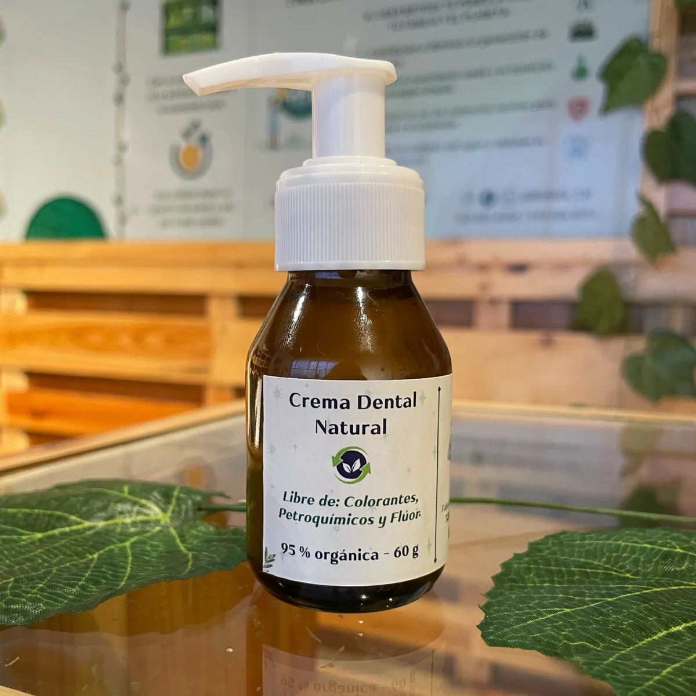

01 / Cuidado oral
Crema dental natural
Una alternativa para acompañar tu rutina de higiene oral diaria.
Beneficios
- Ayuda a mantener un aliento fresco.
- Contribuye al cuidado del esmalte y al alivio de la sensibilidad dental.
- Sin parabenos ni flúor.
- Para niños y adultos.
Ingredientes poderosos
- Aceite de coco y vitamina E.
- Extractos de menta, canela, clavo y anís.
- Espumante derivado del coco.
- Arginina e hidroxiapatita de calcio para fortalecer el esmalte dental sin usar flúor.